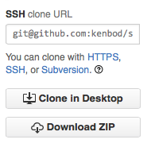
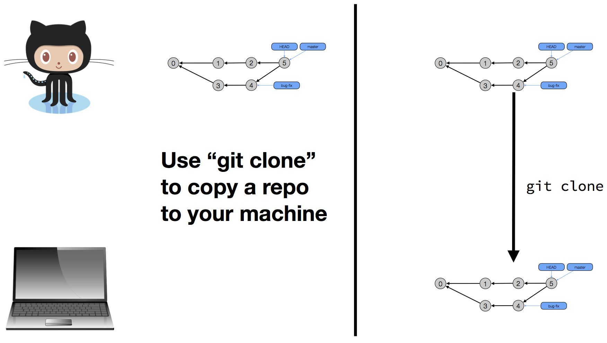
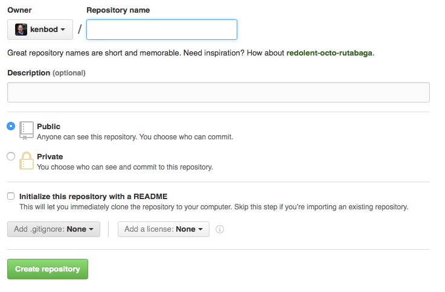
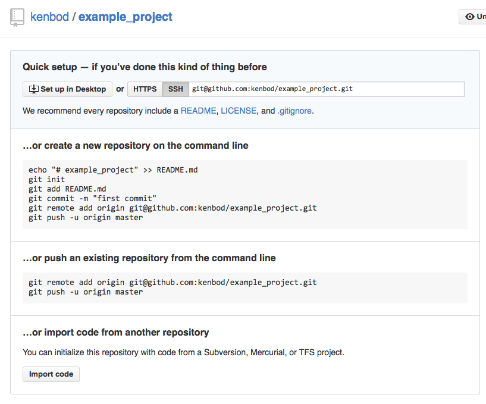
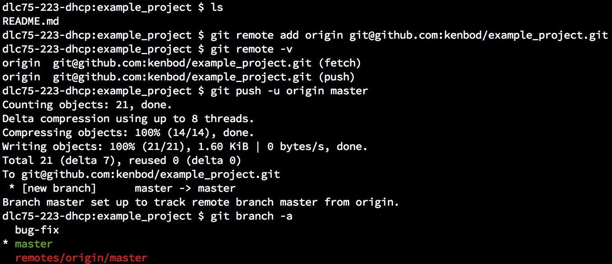

GitHub

GitHub is a Web-based repository hosting service for git. You can upload your repositories to it and then access/manipulate them with a nice Web-based interface for many of the most common git commands. You can create as many public repositories as you want; you have to pay if you want to keep your repositories private. GitHub then adds new services on top of git that are designed for collaboration:
- access control
- issue tracking
- notifications
- pull requests
Brief Introduction
I will not attempt to present a comprehensive introduction to GitHub. Features that I don't cover can become the topic of YOUR presentations. Take a look at <https://github.com/features> for more info.
Instead, I plan to cover:
- how you can use GitHub as a remote copy of a local repository which will let us explore the
git pullandgit pushcommands - how you can use GitHub to serve your presentations to the world (you're looking at one such use now!)
Assumptions
I assume that you:
- have a GitHub account
- you will need one for this class; so please create one, if needed!
- have followed the
Set Up Git
instructions at GitHub Bootcamp - have configured your account to avoid having to type your password each time you access your remote repository from the command line
- When you issue
git clone,git fetch,git pull, andgit pushrequests, GitHub will ask you for your password or passphrase - If you don’t want to type that each time, you will need to
- When you issue
Linking Repositories
The first thing that needs to happen to work with Github is linking a repository on your computer to one that exists on Github. There are two primary ways to do this.
- If the repo exists on GitHub and not on your computer, use the
git clonecommand. - If the repo exists on your computer but not on GitHub, then create an empty repo on GitHub and then upload your repo to it.
Let's explore both of these scenarios.
Using the git clone command
If the repo exists on GitHub already, then go to the repository's page on GitHub and look for the SSH clone URL

Once you have located that URI, perform the following steps:
- Copy the URI
- Switch to a terminal on your local machine
cdto a directory where you want the repository to be located (~/Projectsis one option.)- Invoke the
git clonecommand:git clone <URI>where<URI>is the link you copied from GitHub in step 1.
Here is a graphical depiction of what the git clone command does.

The Link
git clone configures the repository to remember where it came from. You can verify this with the git remote command. For one of my GitHub-based repos, the git remote -v command lists:
origin git@github.com:kenbod/icse2016.git (fetch)
origin git@github.com:kenbod/icse2016.git (push)
This output indicates that my local repository is associated with a remote copy called origin (the first remote associated with a repository is called origin by convention) that is located on GitHub. A repository can be associated with any number of other repositories and can pull and push from any of them.
On a repository that has no remotes, the git remote -v command produces no output.
Linking repositories, case 2
If a repo exists on your computer but not on GitHub, then to create a copy on GitHub that can be linked to your local copy, perform the following steps:
- Create an empty repo on GitHub by clicking this button:
Fill out the dialog below; enter a name for the repo and skip the initialization steps that GitHub can perform.

After the empty repository has been created, GitHub provides helpful instructions on how to establish the link:

Example
As an example, I took the (very) simple repo I created during the Git lecture and uploaded it to GitHub. I named my new empty repo on GitHub example_project
to match what I called the repo on my laptop. Here's what happened:

Things to note:
- The
git remotecommand is first used to add a remote repository, then used to list our local repository’s remotes. git pushis used to push the contents of our master branch to the remote repo AND to configure the local branch totrack
the remotegit branch -ais used to list all branches including the ones on our remote- We have a local branch called
bug-fixthat did NOT get copied to the remote
Establishing the Link
git clone- When you clone a repository, it automatically creates a local branch for each remote branch and sets up a
tracking relationship
between them. - A local branch that
tracks
a remote branch will allowgit pullcommands to copy commits from the remote branch that were added in some other way (typically by being pushed to that branch by one of your collaborators)
- When you clone a repository, it automatically creates a local branch for each remote branch and sets up a
git push -u <repo> <refspec>- This is the other way to establish a link between a local branch and a remote one; in this case, you're simultaneously pushing the contents of a local branch (thus creating the branch on the remote repository) and setting up the tracking relationship
git push
We are just scraping the surface of the git push command. The generic form of the command is:
git push <options> <repo> <refspec>
The <repo> argument ALWAYS refers to a remote repository. If you don’t specify it, then origin is assumed.
The <refspec> argument is a placeholder for this beast: (+)<src_ref>:<dst_ref>
src_refis a refspec that references your local repo;dst_refis for the remote- If you just list a single branch name (like we did), it is short for
<src_branch>:<dst_branch>or, in our case,master:master - If you don’t specify the
<refspec>, your current branch is assumed
Putting it all together
git push -u origin master
This command means that we want to push the contents of the master branch of MY repository to the master branch of the remote repository (creating the branch, if needed) AND set up a tracking relationship between them.
After we set-up the tracking relationship, we can push new commits to the remote copy of the master branch using any of these commands
git push origin master:master
git push origin master
git push
The last command assumes that your current branch is master.
Pull before you Push
If you have new commits that you want to push to the remote but someone else already pushed THEIR new commits to the remote, you will need to pull them in first using ANY of these commands:
git pull origin master
git pull
git pull is a short cut
in that it does the following:
- git fetch <args>: pulling down the latest info about the remote
- git merge <remote-branch>: this merges the changes of the remote branch into your current local branch
As a result, if you just want to pull changes from the remote repository but not modify any of your branches just yet, you can just issue a git fetch command and then do any merging into branches yourself.
Regardless, once you have pulled, you can resolve any conflicts that might have popped up and then you can push your own commits to the remote branch
Finally, going back to our example, if we want our bug-fix branch from our local repository to be stored on the remote, then we can just push it using the same command that we did before. Here's how:
git checkout bug-fix
git push <== fails, because remote branch doesn’t exist yet
git push -u origin bug-fix <== works!
Next Steps
That's it for our review of GitHub.
Next up, head to the material on Strategies for GitHub Presentations or head back to the Table of Contents.